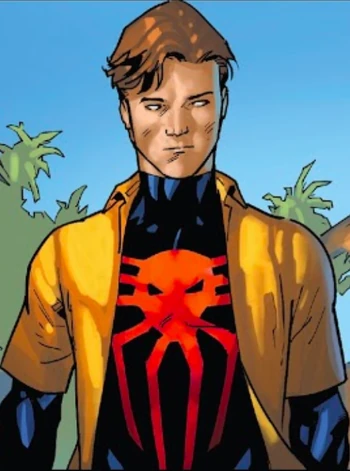
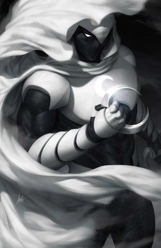
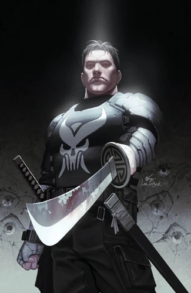
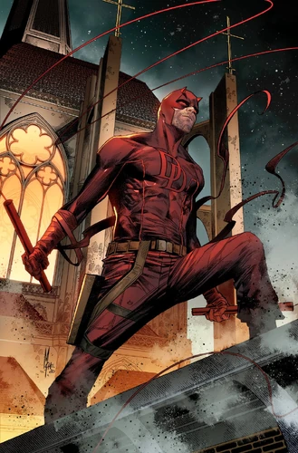

Marvel counts among its characters such well-known superheroes as Spider-Man, Iron Man, Captain America, Thor, Doctor Strange, Hulk, Daredevil, Wolverine, Black Panther, and Captain Marvel, as well as popular superhero teams such as the Avengers, X-Men, Fantastic Four, and Guardians of the Galaxy.
|  | Spider-Man |
| Miguel O'Hara, an engineer of Irish and Mexican descent, was born after his mother Conchata had an affair with her husband's boss Tyler Stone, though grew up believing his stepfather was also his biological father. | |
| Name | Miguel O'Hara (Earth-928) |
| Debut Date | June, 1992 |
| Superpowers |
|
|  | Moon Knight |
| Marc Spector, better known as the vigilante Moon Knight, was once a mercenary left for dead in the desert, where he was revived by the Moon god Khonshu. Appointed as Khonshu's fist and high priest, Moon Knight enacts justice to protect those who travel at night. Marc also has dissociative identity disorder, some of his alters being millionaire Steven Grant and cab driver Jake Lockley. | |
| Name | Marc Spector (Earth-616) |
| Debut Date | May, 1975 |
| Superpowers |
|
|  | The Punisher |
| Lt. Francis "Frank" Castle (born Francis Castiglione) a.k.a. the Punisher was an Italian-American former US Marine who served in multiple tours of duty, including the Siancong War, where he received the Bronze Star, Silver Star, and four Purple Hearts. He became a vigilante after seeing his wife; Maria and children; Lisa and Frank Jr. gunned down for accidentally observing a Mafia "hit". Now with a distinct death's head skull adorning his chest, he devoted his life to the task of destroying organized crime wherever he found it. | Name | Francis Castle (Earth-616) |
| Debut Date | October, 1973 |
| Superpowers |
|
|  | Daredevil |
| Daredevil's life is a mix of joy and tragedy. The story of Matt Murdock began with his father. Jonathan "Battling Jack" Murdock raised his sons, Matt and Mike alone, claiming Matt's mother had died. Jack wanted his sons to be more successful than him. He impressed upon Matt the need to constantly study instead of playing sports with other kids. Jack hoped that Matt would become a doctor or a lawyer instead of an "uneducated pug" like himself. This led the neighborhood kids to bully the "cowardly" Matt as "Daredevil", while his twin brother came to his aid. Matt took out his frustrations by secretly training in his father's gym. | |
| Name | Matthew Michael "Matt" Murdock |
| Debut Date | February, 1964 |
| Superpowers |
|